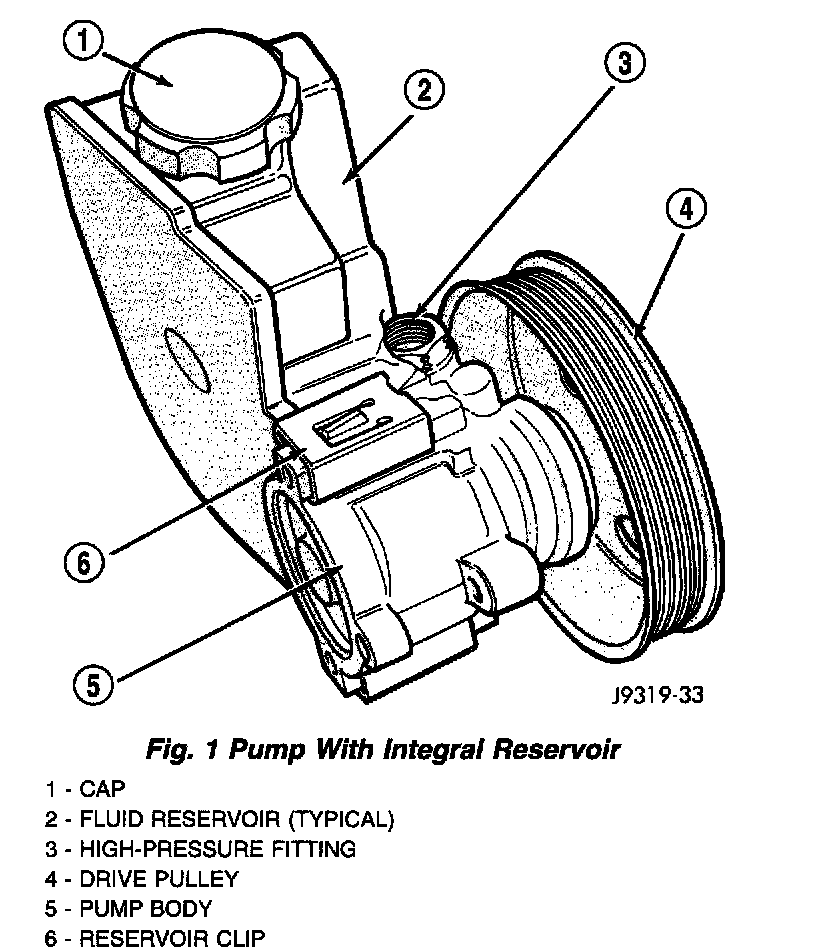

Power Steering Pump: Description and Operation

Hydraulic pressure is provided for operation of the power steering gear by a belt driven power steering pump. The power steering pump is a constant flow rate and displacement, vane-type pump. The internal parts in the housing operate submerged in fluid. The flow control orifice is part of the high pressure line fitting. The pressure relief valve inside the flow control valve limits the pump pressure. The reservoir is attached to the pump body with spring clips.
The power steering pump is connected to the steering gear by the pressure and return hoses. The pump shaft has a pressed-on drive pulley that is belt driven by the crankshaft pulley.
NOTE: Power steering pumps have different pressure rates and are not interchangeable with other pumps.